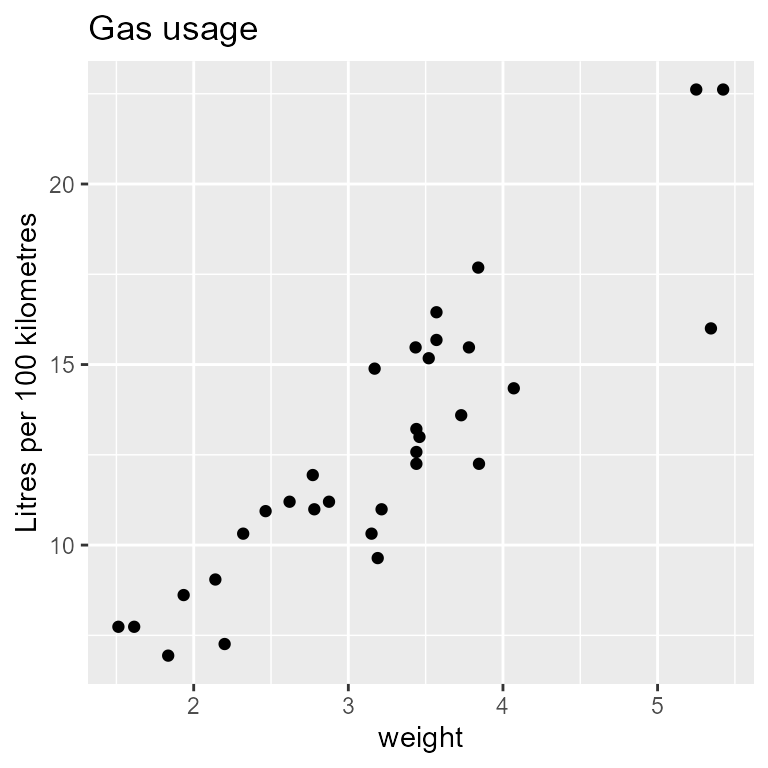
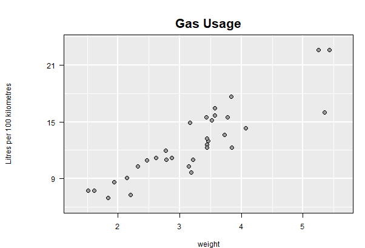

The magrittr package provides several different types of pipes which can be a handy way to organize computation, especially when the computation involves processing data for input to another procedure, in this case ggplot():
library(dplyr) # load this to also have dplyr functionality
library(magrittr)
library(ggplot2)
p1_piped <- mtcars %>%
rename(transmission = am, weight = wt) %>%
mutate(lp100km = (100 * 3.785411784) / (1.609344 * mpg)) %>%
select(weight, lp100km) %>%
ggplot(aes(x = weight, y = lp100km)) +
geom_point() +
ylab("Litres per 100 kilometres") +
ggtitle("Gas usage")Here the “pipe” %>% takes the output of its left hand side and pushes it into the first argument of its right hand side. Arbitrary many pipes may be gathered together.
This connects nicely with ggplot2’s addition + operator (+ itself is sometimes a pipe, sometimes a layer in ggplot construction) to create the ggplot from the data and assign it to p1_piped.
Two things to note here are. First, the result of the data manipulation is assigned at the beginning using the <- assignment function which seems to run counter to the data flow indicated by the pipes. A more consistent flow would be to have instead written
mtcars %>%
rename(transmission = am, weight = wt) %>%
mutate(lp100km = (100 * 3.785411784) / (1.609344 * mpg)) %>%
select(weight, lp100km) %>%
ggplot(aes(x = weight, y = lp100km)) +
geom_point() +
ylab("Litres per 100 kilometres") +
ggtitle("Gas usage") -> # Note assignment occurs here
p1_pipedNow the assignment operator -> is used at the end, matching the data flow of the pipes.
Second, in either case the ggplot is not itself displayed (or rendered) until it is printed.
p1_piped
Once built, as happens when the plot has been displayed as above, an interactive loon plot can be had as always, simply by calling ggplot2loon() on the built ggplot:
library(loon.ggplot)
ggplot2loon(p1_piped, linkingGroup = "Motor Trend 1974")Again, the additional specification here of the linkingGroup will cause display attributes to be pulled from the plots in that linking group.
gg_pipe(data, ggplotObj)
Note that before a ggplot can be displayed, a number of steps are performed so as to prepare the plot object for rendering (e.g. see ggplot2::ggplot_build). Unfortunately, this delay in completing the preparation of the ggplot can make it difficult to attach further operations in the %>% pipeline after the ggplot itself – apart of course from further ggplot2 additions via the + operator. For example, one cannot simply add %>% ggplot2loon() at the end of the pipeline used to construct the ggplot. That is,
mtcars %>%
rename(transmission = am, weight = wt) %>%
mutate(lp100km = (100 * 3.785411784) / (1.609344 * mpg)) %>%
select(weight, lp100km) %>%
ggplot(aes(x = weight, y = lp100km)) +
geom_point() +
ylab("Litres per 100 kilometres") +
ggtitle("Gas usage") %>%
ggplot2loon()would produce neither a ggplot or an interactive loon plot.
To get around this problem, in loon.ggplot the function gg_pipe() is provided to encapsulate the ggplot construction in any pipeline and force the ggplot to be built (though not rendered in a display). The output of this function can then be passed on to ggplot2loon().
For example,
mtcars %>%
rename(transmission = am, weight = wt) %>%
mutate(lp100km = (100 * 3.785411784) / (1.609344 * mpg)) %>%
select(weight, lp100km) %>%
# encapsulate the ggplot construction with gg_pipe()
gg_pipe(ggplot(aes(x = weight, y = lp100km)) +
geom_point() +
ylab("Litres per 100 kilometres") +
ggtitle("Gas usage")
) %>%
# and pass the built plot on
ggplot2loon(linkingGroup = "Motor Trend 1974")constructs the interactive plot which could have been assigned to a variable as was done with the original ggplot construction.
From here, the pipeline can be grown as before, recognizing of course that the output of ggplot2loon() is a loon plot of some sort. This means that functions that operate on loon plots (as their first argument can be used). As with any piping operation, attention must be given to the first argument of the functions in the pipeline as well as to what the input and outputs are of any function.
For example,
mtcars %>%
rename(transmission = am, weight = wt) %>%
mutate(lp100km = (100 * 3.785411784) / (1.609344 * mpg)) %>%
select(weight, lp100km) %>%
# encapsulate the ggplot construction with gg_pipe()
gg_pipe(ggplot(aes(x = weight, y = lp100km)) +
geom_point() +
ylab("Litres per 100 kilometres") +
ggtitle("Gas usage") ) %>%
# and pass the built plot on
ggplot2loon(linkingGroup = "Motor Trend 1974") %>% # pipe the loon plot on
l_cget('color') # Gets and returns the vector of point coloursIn the magrittr package (the source of the pipeline operation) there are a variety of pipeline operators which might also be useful – not just %>%.
l_ggplot()
Additionally, using function l_ggplot, can also create a loon plot with ggplot pipe model.
The display of ggplot object relies on the default print() function in R. Function l_ggplot, inserts a new class l_ggplot into the original ggplot object. At the printing time, S3 method print.l_ggplot() will be executed to transform a ggplot plot to a loon plot.
obj <- mtcars %>%
rename(transmission = am, weight = wt) %>%
mutate(lp100km = (100 * 3.785411784) / (1.609344 * mpg)) %>%
select(weight, lp100km) %>%
# replace `ggplot` to `lggplot`
l_ggplot(aes(x = weight, y = lp100km)) +
geom_point() +
ylab("Litres per 100 kilometres") +
ggtitle("Gas usage")
objHowever, this design has an obvious drawback: confusion of the output data structure. Since the transformation is accomplished at the printing time, object obj is still a ggplot data structure. To create a loon “handle”, we have to use l_getFromPath()
if(utils::packageVersion("loon") >= "1.2.4") {
# **THIS IS IMPORTANT**
# The path name can be obtained at the top left tk window
# Suppose the label is "loon.ggplot --path: .l13.ggplot"
# The path would be the char right after "path: " which is ".l13.ggplot"
loonWidget <- l_getFromPath(".l13.ggplot")
class(loonWidget)
# [1] "l_plot" "loon"
}Of course, for plots already existing in loon, ggplot() and hence gg_pipe() could be avoided entirely:
mtcars %>%
rename(transmission = am, weight = wt) %>%
mutate(lp100km = (100 * 3.785411784) / (1.609344 * mpg)) %>%
select(weight, lp100km) %>%
# and pass the built plot on
l_plot(title = "Gas Usage",
showGuides = TRUE, showScales = TRUE,
ylabel = "Litres per 100 kilometres",
linkingGroup = "Motor Trend 1974") %>%
plot() # get a static version via grid